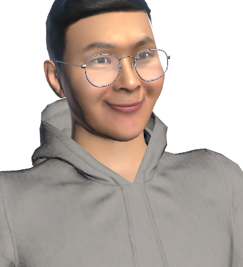

01 · Physical Reality
카메라와 로봇, 몸의 움직임이 실제 세계를 이해하는 데이터가 됩니다.
02 · Digital World
공간을 3D로 복원한 가상 연구실에서 AI 에이전트가 사람을 맞이합니다.
Intelligent Reality Lab · Hanyang University ERICA
사람과 디지털 세계, 물리적 현실을 연결하는 상호작용을 만듭니다.
The Intelligent Reality Lab (IRL) explores how people interact with technology across physical and virtual worlds.
Our research brings together XR, Human–Computer Interaction, computer vision and graphics, and intelligent systems.
지능형 현실 연구실(IRL)은 물리적 현실과 가상 세계를 넘나들며 사람과 기술이 어떻게 상호작용할 수 있는지를 연구합니다.
XR, Human–Computer Interaction, 컴퓨터 비전·그래픽스, 지능형 시스템을 연결합니다.
Virtual Lab · 가상 연구실
그리고 그 연구실에, 지금 걸어 들어올 수 있습니다.
Each of those areas has a room. The lab is also a WebXR space that opens from this browser — or from an XR headset.
위의 연구 분야는 각각 하나의 방으로 만들어져 있습니다.
Enter the virtual lab 가상 연구실 들어가기

Hyeongil is at the door. Ask him about a paper, about joining, about a collaboration — he walks you there and takes a message. 안내 에이전트가 입구에서 기다립니다.